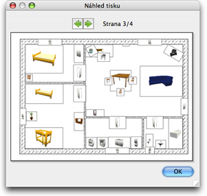

| Jak tisknout projekt | |||
Projekt vytisknete volbou menu Soubor > Tisk.... V základním nastavení tiskne program Sweet Home 3D seznam nábytku, plán projektu a odpovídající 3D náhled projektu, základní velikost papíru, okraje a orientaci papíru.
V tomto menu mù¾ete kliknutím na Formát strany mìnit velikost papíru a jeho opientaci. Rovnì¾ mù¾ete zvolit zda chcete tisknout seznam nábytku, plán a 3D náhled projektu. K náhledu tisku strany slou¾í menu Soubor > Náhled tisku ....  V menu náhledu tisku uvidíte, jak bude projekt vyti¹tìn na stranì za stranou. K pohybu v náhledu pou¾ívejte tlaèítka ¹ipek, pøípadnì ¹ipy klávesnice. |

|